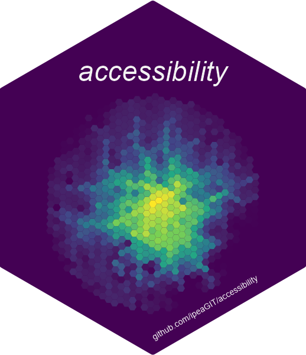

Changelog
Source:NEWS.md
accessibility 1.4.0
CRAN release: 2024-03-06
Bug fixes
- Fixed a bug in which land use data passed to accessibility functions as a
tibblecould lead to an error.
New features
- New function
decay_logistic().
accessibility 1.3.0
CRAN release: 2023-10-20
New features
- New parameter
detailed_resultstospatial_availability(), used to specify whether results should be aggregated by origin-destination pair or by origin. When aggregation by origin-destination pair, the output also includes the demand, impedance and combined balancing factors used to calculate spatial availability.
accessibility 1.2.0
CRAN release: 2023-09-21
New features
- New inequality functions
concentration_index()andtheil_t().
accessibility 1.1.0
CRAN release: 2023-06-22
New features
- The package now includes functions to estimate accessibility inequalities (
palma_ratio()andgini_index()) and poverty (fgt_poverty()). - New accessibility functions
spatial_availability()andbalancing_cost(). - New vignette “Calculating accessibility inequality and poverty”.
-
cost_to_closest()parameternnow accepts a numeric vector, instead of being restricted to a single number. -
cumulative_cutoff()parameterscutoffandtravel_costnow accepts a numeric and a character vector, respectively, instead of being restricted to a single number/string. -
cumulative_interval()parameterintervalnow accepts a list of numeric vectors, instead of being restricted to a single vector. - The decay functions can now take numeric vectors as input, instead of being restricted to a single number (in the case of
decay_stepped(), bothstepsandweightscan take alistofnumericvectors as input, instead of being restricted to a singlenumericvector each).
accessibility 1.0.1
CRAN release: 2022-10-06
Bug fixes
- Fixed a bug in which
cost_to_closest()would returnNAvalues when filling missing ids (which should be filled withInf, since they cannot reach any opportunities). This was also responsible for the warning reported in #27, which was also fixed.
accessibility 1.0.0
CRAN release: 2022-07-22
The package has been to tremendous changes. Basically, there’s not a single part of it that remained untouched: documentation, vignettes, function names, parameter names, extra functionality, performance improvements, etc. While it is impossible to highlight everything that has been done, we’ll try to summary some of the key points in the following topics.
Breaking changes
- Accessibility functions previously worked with a single input dataset:
data. Now they require two input datasets:travel_matrixandland_use_data. - Function names were changed:
-
time_to_closest()->cost_to_closest() -
cumulative_time_cutoff()->cumulative_cutoff() -
cumulative_time_interval()->cumulative_interval() -
gravity_access()->gravity()
-
- Parameter names were changed:
-
opportunity_col->opportunity -
travel_cost_col->travel_cost -
by_col->active - In
cost_to_closest():n_opportunities->n - In
cumulative_interval():stat->summary_function - In
floating_catchment_area():population_col->demand - In
floating_catchment_area():fca_metric->method
-
- Parameter required values were changed:
-
activenow takes alogical, instead of a string (whichby_colpreviously took). - In
cumulative_interval():summary_functionnow takes afunction, instead of a string (whichstatpreviously took).
-
New features
- New function
decay_stepped(). - New parameter
interval_incrementtocumulative_interval(), used to specify how many travel cost units separate the cutoffs used to calculate the accessibility estimates which will be used to calculate the summary estimate within the specified interval. - All accessibility functions gained a
group_byparameter, that allows accessibility estimates to be grouped by one or more columns present intravel_matrix. - All accessibility functions (but
cumulative_interval()) gained afill_missing_idsparameter, that includes in the results origins whose accessibility would be 0 but, due to some commonly overlooked implementation details, are usually left out from the output.cumulative_interval()doesn’t have this parameter because its result will always include all origins, otherwise the summary measure wouldn’t be calculated properly.